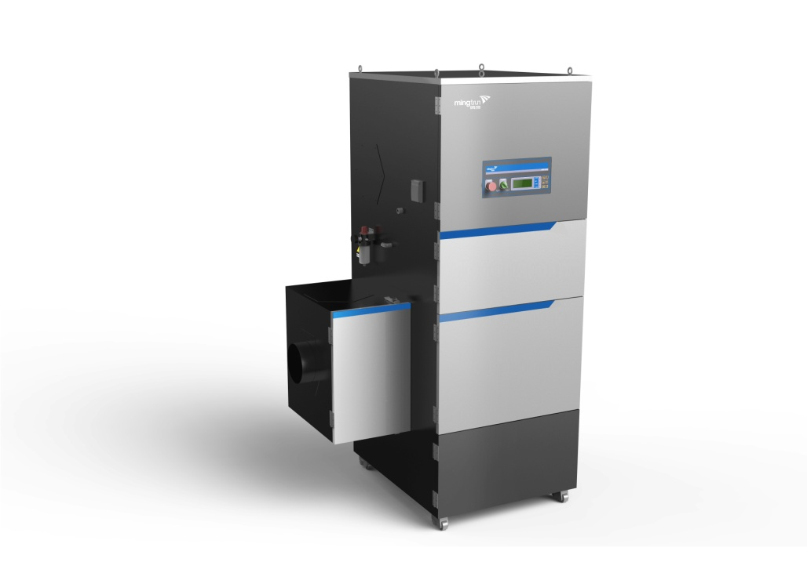

MQW-6001
柴油车尾气抽排处理系统

产品介绍
1、采用惯性力+物理过滤法去除柴油车尾气中的颗粒物，采用专项防火设计技术避免排气高温引发的安全隐患；
2、适用于柴油车环保检测站，柴油检测线等工作场合进行柴油车环保检测时产生的尾气处理。
产品特点
☆可处理柴油车尾气中的颗粒物；
☆滤筒可更换，且更换方便；
☆手动、定压差与定时反吹过滤筒；
☆可面板控制也可有线控制处理系统的风机启动与停止；
☆具有电源状态指示灯、风机启停状态指示灯、过滤器是否需要更换指示灯、报警指示灯，实时显示滤筒压差值、风机电流、反吹状态、反吹效果等状态，系统状态一目了然；
☆具有电机电流监控功能，保护电机正常运行；
☆具有急停开关保护；
☆具有门开关检测保护。
技术参数
技术参数
| 工作条件 | 气压 | 76.0 kPa～106.0kPa | 处理风量 | 2400m3/h |
| 温度 | 0℃～50℃ | 颗粒物过滤效率 | 99.5% | |
| 相对湿度 | ≤90% | 消耗功率 | 5.5kW | |
| 电源电压 | AC（380±38）V，频率50Hz±1Hz | 仪器重量 | 约400 kg | |
| 过滤筒等耗材更换周期 | 大于6个月 | 噪声 | < 70dB | |
| 外形尺寸 | 1200×970×2140 （长×宽×高） 单位：mm | |||